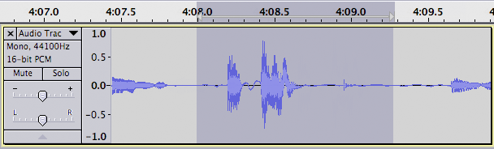
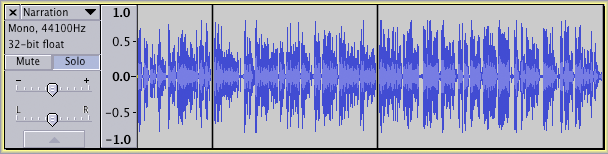
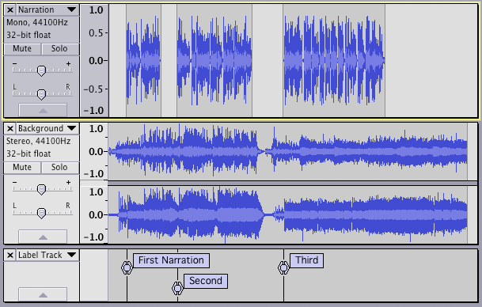
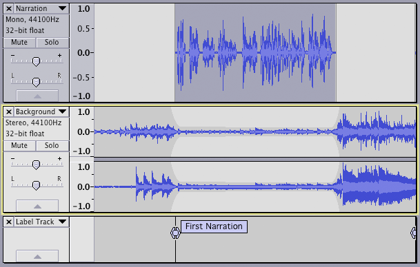

Tutorial - Mixing a Narration With Background Music
From Audacity Manual
This tutorial assumes that you have figured out how to connect your microphone to your computer and get the sound from the microphone into Audacity. If you haven't got that far yet, please read the Your First Recording tutorial first.
Introduction
The objective in this tutorial is to record a simple narration, add some background music, cut the narration to fit the music, lower the volume of the music during the narration, and finally mix and export the final product.
Give yourself an hour or so to complete this tutorial.
On your first attempt:
- don't try to create a masterpiece
- don't work on something critical.
You are learning and experimenting, exploring the many tools Audacity offers you. Don't expect to get it perfect the first time.
It really doesn't matter what your narration is about, and whether you read it or ad lib. It also doesn't matter what the music is, but an instrumental track is preferable.
Save your work often!
|
Step 1: Record the narration
Consider where your microphone is going to be in relation to everything else in the room. Try to place it so that it picks up a minimum of computer noise (hard drives, fan). When speaking into the microphone, point the microphone at your mouth but don't point your mouth at the microphone. If you can, place the microphone so that you are talking past it - think David Letterman and that microphone he has on his desk: he's always talking over it. Setting up the microphone so that it is level with your mouth but a little off to the side also works. This avoids "popped p's" and other breath effects from ruining your recording. Finally, try to set up the microphone so that it is 4 to 6 inches away from your mouth.
While you are talking, try to keep looking in one direction - moving your head left or right, up or down, while you're talking will change the tonal quality of your voice, and may be distracting to your listeners. Speak in a normal, conversational tone of voice, but also speak clearly and enunciate carefully. Your listeners can't see you so don't have the visual cues they would have if your were speaking to them in person.
- make sure that is checked
- use headphones (to listen to the background track) so that your microphone will pick up only your voice.
If you don't need to hear yourself in the headphones you can continue with this tutorial. Otherwise please read the tutorial on overdubbing for details on how to set up Audacity so you can hear both the background track and yourself in your headphones.
If you are overdubbing your narration certain parts of the work flow presented below will change or be eliminated. For example: your first step will be to import the audio that you will be recording your narration against; you will not need to cut the narration to fit the background track.
So let us begin ...
Start Audacity: a new untitled project window opens. Click on and name your project.
Set the recording source to microphone in Audacity's mixer toolbar recording selector Mixer Toolbar (or on OS X, set the microphone as the default recording source in Apple Audio MIDI Setup).
You are now ready to record the narration. Don't worry about mistakes, pauses, coughs and similar - we can edit those out later. In fact you may want to make a few deliberate mistakes so you can practice editing them out later. When you stop to make a correction, go back to the start of a natural break - sentence or phrase - and start again in a normal voice: once you've tried to edit out your mistakes you will realize the importance of this.
Click the Record button  in the Transport Toolbar. Record your narration.
in the Transport Toolbar. Record your narration.
| If you have just made a recording it is strongly recommended to it immediately to WAV or AIFF (ideally to an external drive) as a safety copy before you start editing the project. |
To be really professional, perform a level test of your voice before it is recorded for real. Click on the downward pointing arrow in the Recording Meter and click "Start Monitoring". While speaking into the microphone as loudly as you intend, adjust the recording level slider (by the microphone symbol) on the Mixer Toolbar so the Recording Meter is almost reaching the far right-hand side (but not far enough to bring the red hold lights on). If the Recording Meter is not visible, click on and enable the Meter Toolbar
Step 2: Edit the narration
Cutting out the mistakes
Don't edit too tightly - the final result should sound natural. Use Audacity's Cut Preview feature to hear how each edit will sound before you make the edit. Then listen back to each edit - undo and try again if it doesn't sound natural.
The image below shows a situation where the speaker paused, cleared his throat and continued with the next sentence. We want to take out the throat-clearing plus enough space around it to make it sound natural.
- 
As you can see, the portion to be removed is selected. Press the C key to hear two seconds of audio before, and one second of audio after the selection - this lets you hear what it will sound like after the selection is deleted. This is called "Cut Preview". Adjust the length of the selection until the edit sounds natural. Various ways to adjust a selection were discussed in the Editing an Existing Audio File tutorial. When you are happy with the selection, press the Delete key, choose or press CTRL + K to delete the selection.
Continue in this manner correcting the mistakes until you are satisfied with the end result.
Save your work.
Leveling out the volume
Unless you are professional narrator or voice-over specialist there are probably level (volume) variations during your narration. Remember, your listeners can't see you, so having a consistent volume for your narration is important so they'll be able to hear and understand everything you're saying.
You could go through and manually adjust the volume throughout your narration track using the Envelope Tool, but there's an easier way - use Audacity's built-in Compressor effect. Click on the Track Control Panel of your narration track to select the entire track then choose . The Compressor is a complex but very useful effect, so let's take a moment to see how it works.
The Compressor effect works by making the loud parts quieter, then amplifying everything, which ends up making the quiet parts louder.
- Check
 Make-up gain for 0dB after compressing and Compress based on Peaks.
Make-up gain for 0dB after compressing and Compress based on Peaks.
- The former means that Compressor will maximize the volume of the track after it does its work. The latter means that Compressor will look at the peaks of the waveform rather than its average value.
- The "Threshold" control is the "tipping point" - the point where Compressor decides if something is "loud" (and should be made quieter) or "quiet" (in which case it leaves it alone).
- For our first pass we'll set "Threshold" to "-12 dB".
- The "Noise Floor" control tells Compressor that anything below that level is noise and it shouldn't make it any louder.
- For now we'll set that control to "-80 dB".
- The "Ratio" control tells Compressor how much quieter it should make the loud parts.
- Set it to "6:1".
- Set the "Attack Time" to "0.5 secs"
- Set the "Release Time" to "1.0 secs".
- These two controls tell Compressor how fast it should respond to changes in volume.
Click the button and let Compressor do its work. Listen back to the result.
- Are the quiet parts still too quiet? Choose and try again with a Threshold setting of -18 dB.
- Does your voice sound unnaturally squashed? Undo and try again with a Threshold setting of -6 dB.
Note that once you've gone through setting everything up the first time, on subsequent tries you just change the Threshold. This make it easy to home in on the setting that works.
When you have your narration edited to your liking, be sure to save your project. Now it's time to add the music.
Step 3: Import the background music file
Choose and open the background music file you've chosen for the project. Audacity imports the music file into your project and puts it in its own stereo track.
You can import music from a CD into Audacity for the podcast but it should not be recorded as it plays as that is slow and inaccurate. Instead, extract (rip) the audio from the CD to a WAV or AIFF audio file and import that audio file into Audacity. See this tutorial for details.
It is also possible to record the music from records or cassettes (see the tutorial Copying tapes, LPs or MiniDiscs to CD) or any audio that plays on the computer (on Windows or Linux) and record it into Audacity - see Recording audio playing on the computer. On a Mac, use a tool like Audio Hijack to record sounds playing from an application such as a browser to an .AIFF audio file.
Click the Skip to Start button on the Transport Toolbar, then click the Play button  . Note that Audacity automatically mixes the music and narration for you. Click the Stop button
. Note that Audacity automatically mixes the music and narration for you. Click the Stop button  when you've heard enough.
when you've heard enough.
Look at the Track Control Panel at the left of each track. Note the "Mute" and "Solo" buttons. You can use these to control which tracks you hear when you click the Play button. Clicking the "Mute" button will turn that track off - it will not be included in the mix when you press the Play button. Clicking the "Solo" button will cause only that track to be heard when you press the Play button. The exact behavior of the Solo button can be set in the Tracks Preferences panel.
Step 4: Time-shift the tracks
The Audacity Tracks and Clips page describes how to use the Time Shift Tool to slide clips around.
Cutting the Narration Track
Start by clicking the "Solo" button on the narration track - we don't want to listen to the music track while we're doing this work on the narration track.
For the purposes of this tutorial we will assume that we want to cut the narration into three separate segments. Each of these segments will begin when the music makes a dramatic change.
Find the spot between the first and second portions of the narration. Using the Selection Tool click at this point. Choose - a split line appears. There are now two clips on the narration track. Similarly, put a split point between the second and third portions of the narration. The narration track will now look something like this:
- 
Marking the places in the background music track where you want the narration clips to start
Remember, our goal is to cut the narration to fit the music. So our next step is to pick the spots in the background music track where we want the three narration clips to start
Click the "Solo" button on the narration track to turn off the Solo function on that track. Click the "Solo" button on the background music track so you will only hear that track.
Identify the point in the background music track where you want the narration to begin. Click at that point with the Selection Tool. Choose . Type a name for the label, for example "First Narration".
Similarly, identify the points in the background music track where you want the second and third narration clips to begin, and create labels at those points. Your project window should look something like this:

Moving the clips to work with the music
Click the button on the background music track to turn off the Solo function on that track, so we can hear both the narration and music tracks.
Using the Time Shift Tool  drag the third narration clip so that the start of the clip lines up with the third label. Audacity will help you line this up perfectly - when the start of the clip lines up with the third label a yellow Boundary Snap Guide will light up. Similarly, drag the second narration clip to line up with the second label, and drag the first narration clip to line up with the first label. Your project window should now look something like this:
drag the third narration clip so that the start of the clip lines up with the third label. Audacity will help you line this up perfectly - when the start of the clip lines up with the third label a yellow Boundary Snap Guide will light up. Similarly, drag the second narration clip to line up with the second label, and drag the first narration clip to line up with the first label. Your project window should now look something like this:
- 
Step 5: Adjust relative volume levels
You now have the narration clips where you want them. It's now time to adjust the volume of the background music so your listeners can hear what you're saying. There are at least two ways to do this: manually with the Envelope Tool, or automatically with the Auto Duck effect.
Using the Envelope Tool
Details on how to use the Envelope Tool are here. You may want to read that page before continuing.
Zoom in on the first narration clip. A quick way to do this is: double-click on the first narration clip; choose ; then choose
Select the Envelope Tool  from the Tools Toolbar. In the music track, click to create a control point a second or so before the first narration clip begins. Click to create a second control point just as the narration starts. Drag the second control point down to reduce the volume of the music track. Click in the Timeline a few seconds before the start of the first narration clip to hear the effect. Press SPACE to stop playback. Adjust the first and second control points to get the length and depth of the fade you want. In a similar manner create the fade up at the end of the first narration clip.
from the Tools Toolbar. In the music track, click to create a control point a second or so before the first narration clip begins. Click to create a second control point just as the narration starts. Drag the second control point down to reduce the volume of the music track. Click in the Timeline a few seconds before the start of the first narration clip to hear the effect. Press SPACE to stop playback. Adjust the first and second control points to get the length and depth of the fade you want. In a similar manner create the fade up at the end of the first narration clip.
- 
You could continue in this manner doing the fades on the music track for each clip in the narration track. Or you could try using the Auto Duck effect. The advantage of using the Envelope tool is that you can always go back and change the fades. Auto Duck, being an effect, permanently alters the music track.
Step 6: Smooth fade of the background music
Unless you're very lucky (or have planned very, very well), the music probably goes on for some time after the narration is finished. In this case you'll want to fade out the music. Decide how long you want the music to continue a full volume after the narration has finished, and how long you want it to take to fade out.
Using the Selection Tool, click in the music track at the point where you want the music to be completely faded out. Choose . Press the Delete key. Now click at the point where you want the music to begin fading out. Again choose , then Choose .
Step 7: Check your mix
If you maximized the volume of your narration track back in Step 2 there is a good chance that when you mix it with the music track the resulting mix will be too loud and cause clipping - this is a bad thing. Remember, we maximized the volume and leveled out the loud and soft passages so that people would be able to hear you. To check for clipping, play back a short portion of the project where there is narration and background music. Watch the Playback Meter - if clipping occurs the red "clip bars" will appear at the right-hand end of the Playback Meter. If this happens, use the Track Gain Slider to turn down the volume of both the narration and music tracks to -2 dB. Listen to the short section again and look for the red clip bars on the Playback Meter. If clipping still occurs, turn down the volume of the narration and music tracks to -4 dB each.
Step 8: Save and Export
The "File > Save" command just saves the Audacity project. You need to export your project in order to use it with other audio programs. When you export your project, Audacity automatically mixes it, so the exported file sounds just like what you hear when you click the Play button.
Make sure there are no unwanted bits of audio far along the time line or your exported file will be unexpectedly long! Click on the Fit Project button in the Edit Toolbar. If the expected length of your final mix is displayed in the window, all is fine. If the displayed time line is much longer than your actual production, look for the unwanted bits of audio and delete them. You may need to click just past the real end of your narration/music and delete everything from there to the end of the track(s).
Audacity can export in a variety of formats. The two most commonly used are MP3 (for podcasts and similar) and WAV (for burning to CD). In order to export to MP3 format you must first install the optional LAME MP3 encoder.
Optional - Mix and Render
You may want to Mix and Render your project before you export it. The Mix and Render command (in the Tracks menu) will mix your project, and put the resulting mix in a new track (this is the "render" portion of the command). This gives you the opportunity to maximize the volume of the final mix, and do a final check for clipping. If you would like to try this, follow these steps:
- Choose
- Mix and Render only mixes the selected tracks - you want to mix all of them
- Choose
- your project is mixed into a new stereo track and the previous, separate tracks are deleted
- Choose
- The Show Clipping command will put red vertical bars anywhere clipping has occurred in your track. If any red bars appear, choose and go back to Step 7.
If no clipping was detected, proceed:
- Click in the Track Control Panel of the newly-created track
- Choose
- accept the default values and click the button.
- the volume of your final mix is maximized.
You exported a project in a previous tutorial. If you need a refresher on how the File > Export Audio... command works, that information is on the Export Audio Dialog page.
Congratulations, your narration over background music is now ready to share with the world.
Step 9: Backup
Backup your exported WAV or MP3 files - you don't want to lose all that valuable work and have to do it all over again, do you? Computer hard drives can fail, destroying all data.
Ideally use a dedicated drive (1+ TB external drives are convenient and economical), or upload to an online (cloud) storage service, to store the WAVs or MP3s. Better still is to make two copies on different external devices and even better is to hold an off-site backup
Publishing your Podcast
Publishing your Audacity-created podcast on the internet is in some ways the most important stage of all. Unless you podcast purely to entertain yourself, you want others to hear what you have to say. Much useful advice on how and where to host your podcasts, how to set up RSS feeds and how to publicise your work can be found in the Wiki Tutorial "How to publish a Podcast".
Further reading
The following book on Podcasting was written by one of the co-founders and developers of Audacity:
- Podcasting with Audacity - Purchasable e-book (PDF download or view online) by Dominic Mazzoni and Scott Granneman
Where to go from here
For more information
- How the Solo button works: Audio Tracks, Tracks Preferences
- Using the Time Shift Tool: Audacity Tracks and Clips
- Using the Envelope Tool: Envelope Tool
- Using Labels: Label Tracks
- The Compressor effect: Compressor
- The Auto Duck effect: Auto Duck
- The Mix and Render command: Tracks > Mix and Render